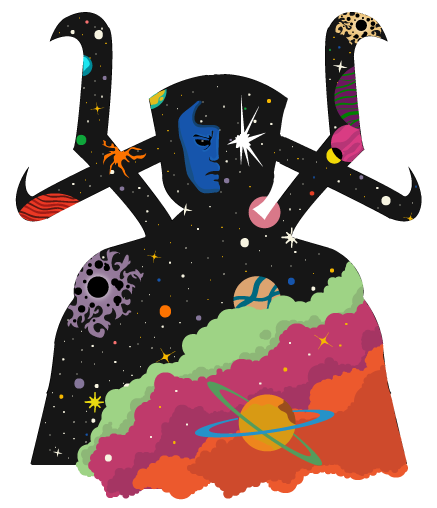

The Universe begins

The Universe was born from the eruption of another dying reality. With this explosion of energy came echoes of conscionness that formed into cosmic beings that carry the sentience of the universe itself.